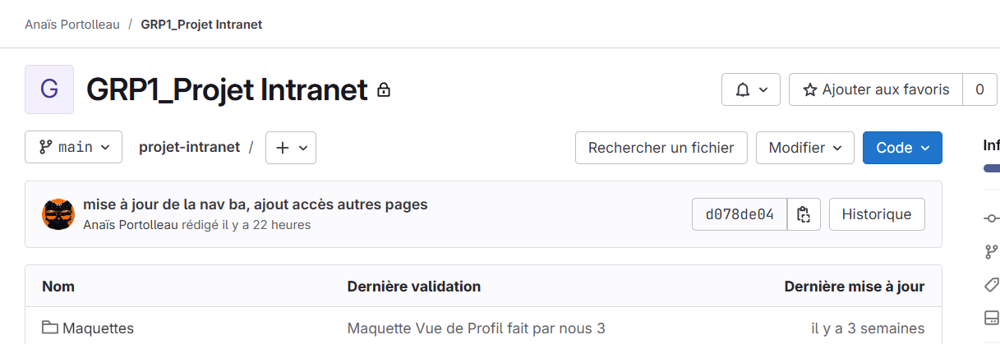
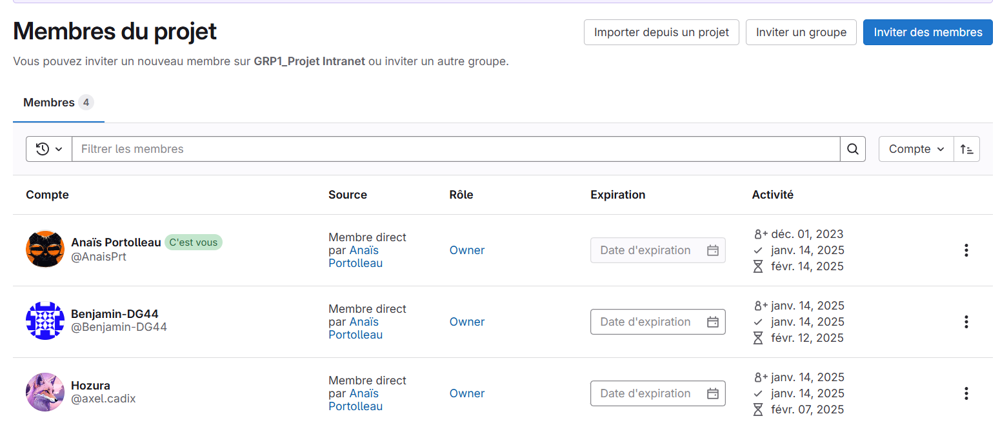
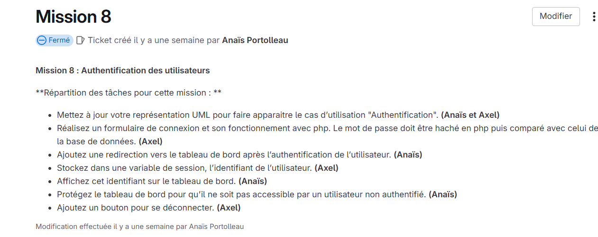
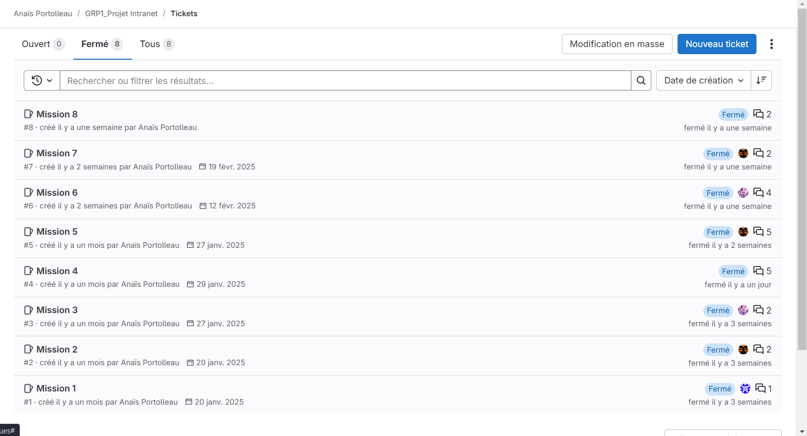
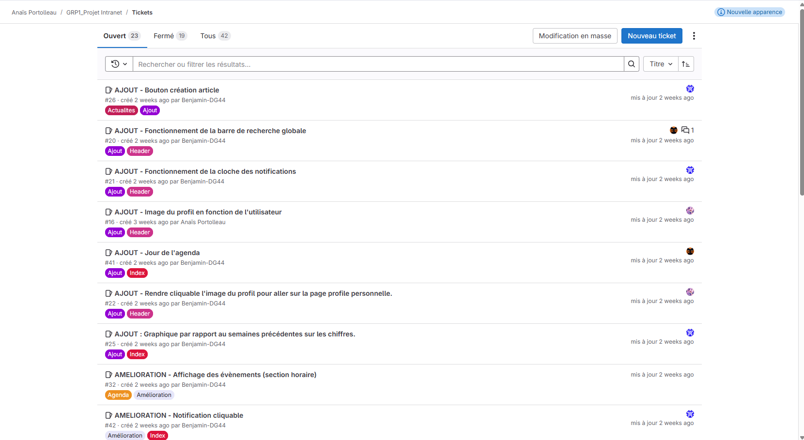

Sur Gitlab, on devait créer un projet « Intranet » pour notre groupe et ajouter les membres de celui-ci. Le projet doit contenir un fichier "Readme.md" avec une courte description du projet.
Voir le fichierLe projet a bien été créé comme on peut le voir ci-dessous :
Ensuite, nous devions ajouter les différents membres comme montré ci-dessous cela a bien été fait:
Sur Gitlab, nous avons cherché l’outil de planification et fait apparaître les missions 1 et 2, en les planifiant pour aujourd’hui. Nous avons également planifié les missions 3, 4, et 5 pour la semaine prochaine. Pour faire les tickets, nous sommes allés dans Programmation, puis Tableau des tickets :
Nous avons ajouté des tickets comme montré ci-dessous :
Avec des labels pour démarquer les pages :
